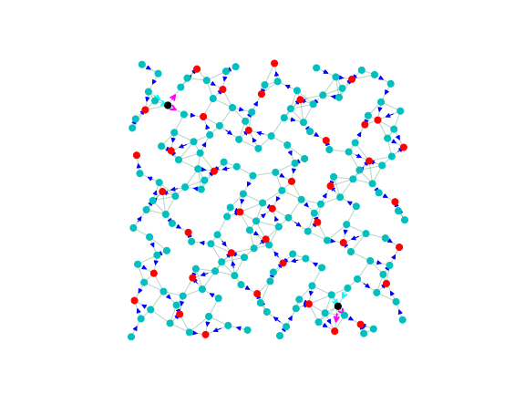

layout: true class: typo, typo-selection --- count: false class: nord-dark, middle, center # 🔀 spareTSV ### Cycle-Cancellation Descent for Min-Cost Flow @luk036 👨💻 · 2026 📅 --- ### 📋 Agenda .pull-left[ **🧠 Part 1: Problem & Setup** - spareTSV Problem Formulation - The digraphx Ecosystem - MCF via Cycle-Cancellation **🟢 Part 2: Implementation** - Building the Residual Graph - Bug: Parallel Edge Collision 🔧 - Fix & Verification Results ] .pull-right[ **🏭 Part 3: Constraints** - Vertex-Disjoint Constraint - NegCycleFinderQ + VertexFilter - Tracking "Used" Nodes **📊 Part 4: Analysis** - Violation Case Study (seed=99) - Why the Algorithm Fails - Future Directions ] --- class: nord-light, middle, center ## Part 1: Problem & Setup 🧠 --- ### 🏭 Spare TSV in 3D ICs — Motivation .pull-left[ **3D ICs** use Through-Silicon Vias (TSVs) for vertical connections. TSVs suffer from defects — spare TSVs (s-TSVs) are added to repair faulty functional TSVs (f-TSVs). **Fault-tolerance structure:** - One s-TSV can repair one f-TSV in its group - Upon fault, the signal is **rerouted** from the faulty f-TSV through the s-TSV - Rerouting distance must not exceed timing budget $D_{\max}$ ] .pull-right[ .mermaid[ <pre> graph LR subgraph "Fault-tolerance group" F1["f-TSV 1"] --> MUX["MUX"] F2["f-TSV 2"] --> MUX F3["f-TSV 3"] --> MUX MUX --> S["s-TSV"] end style F1 fill:#4fc3f7 style F2 fill:#4fc3f7 style F3 fill:#4fc3f7 style S fill:#ef5350 </pre> ] ] **Reference:** Chen, Wen, Shi, Hon, Chang, _"Novel Spare TSV Deployment for 3-D ICs Considering Yield and Timing Constraints"_, IEEE TCAD, 2015. [DOI: 10.1109/TCAD.2014.2385759](https://doi.org/10.1109/TCAD.2014.2385759) --- ### 🌐 Problem Formulation **Goal:** Assign spare TSVs to functional TSVs minimizing total rerouting wirelength, subject to yield and timing constraints. .pull-left[ **Graph model:** - Each f-TSV → primal node (demand $-1$) - Each s-TSV → spare node (demand $0$, transit) - Super-sink → collects all flow (demand $N$) - Edge $(u,v)$ exists if $d_{uv} \le D_{\max} + D_{\max}$ - Edge weight $w_{uv} = \lfloor d_{uv} \times 100 \rfloor$ (wirelength cost) ] .pull-right[ **Constraint:** Each s-TSV can serve **at most one** f-TSV. Equivalently: each non-sink node has at most one outgoing flow edge. $$ \forall v \neq \text{sink}: \quad \lvert\{ (v, u) \in \text{Solution} \}\rvert \le 1 $$ ] **This is a Min-Cost Flow problem with a vertex-disjointness constraint.** 🔑 --- ### 🌐 The spareTSV Problem **Goal:** Route flow from $N$ primal nodes through $M$ spare nodes to a single sink, minimizing total Euclidean distance cost. .pull-left[ **Graph Construction:** - $N$ primal nodes (supply $1$ each) 🔵 - $M$ spare nodes (transit) 🔴 - $1$ sink (demand $N$) - Geometric edges via Van der Corput sequence - Edge weight = $\lfloor\text{dist}(u,v) \times 100\rfloor$ - Edge capacity = $r$ ] .pull-right[ .mermaid[ <pre> graph LR P1["Primal 0"] -->|"w₁"| S1["Spare 155"] P2["Primal 1"] -->|"w₂"| S2["Spare 156"] P3["Primal 2"] -->|"w₃"| S1 S1 -->|"r"| K["Sink"] S2 -->|"r"| K style P1 fill:#4fc3f7 style P2 fill:#4fc3f7 style P3 fill:#4fc3f7 style S1 fill:#ef5350 style S2 fill:#ef5350 style K fill:#66bb6a </pre> ] ] $$ \text{Minimize} \quad \sum_{(u,v)} w_{uv} \cdot x_{uv} \quad \text{s.t.} \quad \sum_{v} x_{uv} - \sum_{v} x_{vu} = d_u,\; 0 \le x_{uv} \le c_{uv} $$ --- ### 🛠️ The digraphx Ecosystem .pull-left[ **Key Modules:** - `neg_cycle.py` — NegCycleFinder (Howard's algorithm) - `neg_cycle_q.py` — NegCycleFinderQ (constrained variant) - `parametric.py` — MaxParametricSolver - `min_cycle_ratio.py` — MinCycleRatioSolver - **`mcf.py`** — NEW: min-cost flow solver ] .pull-right[ .mermaid[ <pre> graph LR subgraph "digraphx" MCF["mcf.py\nCycle-Canceling MCF"] --> NCQ["neg_cycle_q.py\nNegCycleFinderQ"] NCQ --> NC["neg_cycle.py\nNegCycleFinder"] MCF --> PARAM["parametric.py\nParametric Solver"] end style MCF fill:#4caf50 style NCQ fill:#2196f3 style NC fill:#9c27b0 style PARAM fill:#ff9800 </pre> ] ] **`cycle_canceling_mcf(g, demands, sink=None)`** - Stage 1: Find feasible initial flow (BFS routing) - Stage 2: Cancel negative-cost residual cycles - Optional `sink` parameter enables vertex-disjoint constraint --- ### 🔄 MCF via Cycle-Cancellation Descent .pull-left[ **Algorithm:** 1. Start with a feasible flow $x^{(0)}$ 2. Build residual graph $G(x)$ 3. Find any negative-cost cycle in $G(x)$ 4. Cancel by pushing bottleneck flow 5. Repeat until no negative cycles remain **Optimality guarantee:** a feasible flow is optimal $\iff$ the residual graph has no negative-cost directed cycles. ] .pull-right[ .mermaid[ <pre> graph TD A["Feasible Flow x"] --> B["Build Residual G(x)"] B --> C{Any Negative\nCycle?} C -->|"Yes"| D["Cancel Cycle\n(push flow)"] D --> B C -->|"No"| E["OPTIMAL ✓"] style A fill:#4fc3f7 style B fill:#ffb74d style C fill:#ef5350 style D fill:#81c784 style E fill:#66bb6a </pre> ] ] **Howard's algorithm** finds any negative cycle using Bellman-Ford relaxation + predecessor-graph cycle detection. --- class: nord-light, middle, center ## Part 2: Implementation 🟢 --- ### 🏗️ Building the Residual Graph For each original edge $(u,v)$ with flow $x_{uv}$, capacity $c_{uv}$, cost $w_{uv}$: | Residual Edge | Direction | Capacity | Cost | |---|---|---|---| | Forward | $u \to v$ | $c_{uv} - x_{uv}$ | $+w_{uv}$ | | Backward | $v \to u$ | $x_{uv}$ | $-w_{uv}$ | ```python def _build_residual(g, flow): residual = {} for u, neighbors in g.items(): for v, data in neighbors.items(): f = flow.get(u, {}).get(v, 0) cap, wgt = data["capacity"], data["weight"] if f < cap: residual[u][v] = {"cost": wgt, "capacity": cap - f, ...} if f > 0: residual.setdefault(v, {})[u] = {"cost": -wgt, "capacity": f, ...} return residual ``` --- ### 🐛 Bug: Parallel Edge Collision When the original graph has **both** $(a,b)$ **and** $(b,a)$, two residual edges compete for the **same** `residual[a][b]` key: | Source | Target | Kind | Cost | |--------|--------|------|------| | $a$ | $b$ | forward of $(a,b)$ | $+w_{ab}$ | | $a$ | $b$ | backward of $(b,a)$ | $-w_{ba}$ | The second write **overwrites** the first, silently losing edges needed to form negative cycles! .mermaid[ <pre> graph LR subgraph "Original Graph" A["a"] -->|"(a,b) w=15"| B["b"] B -->|"(b,a) w=15"| A end subgraph "Residual (bug)" R1["residual[a][b] = +15"] --> R2["... overwritten by ..."] R2 --> R3["residual[a][b] = -15 ⚠️"] end style R3 fill:#ef5350 </pre> ] --- ### 🔧 Fix & Verification **Fix:** When both forward and backward edges collide at the same $(u,v)$ key, keep the edge with the **more negative cost** (always the backward edge, since $-w \le 0 \le +w$). ```python prev = residual[u].get(v) if prev is None or edge["cost"] < prev["cost"]: residual[u][v] = edge ``` **Results — spareTSV instance (N=155, M=40):** | Method | Before Fix | After Fix | |--------|-----------|-----------| | Cost (vs simplex 1108) | 1672 ❌ | 1108 ✅ | | Small test (n=8) | 37/43 pass | 75/78 pass | | Medium test (n=15) | 14/25 pass | 21/22 pass | Full digraphx suite: **140/140 pass**. Random test accuracy improved from 56% to 95%. --- class: nord-light, middle, center ## Part 3: Constraints 🏭 --- ### 🔗 Vertex-Disjoint Path Constraint **Problem:** The MCF solution may produce nodes with both multiple incoming AND multiple outgoing flow edges — creating routing ambiguity. .pull-left[ **What is acceptable** ✅: - Single-incoming, multiple-outgoing nodes - Hardware can select one outgoing path arbitrarily - Example: node 136 → both 24 and 100 (one incoming from some node) **What is NOT acceptable** ❌: - Nodes with **both** multiple incoming AND multiple outgoing - Creates ambiguity: which incoming flow goes to which outgoing? ] .pull-right[ .mermaid[ <pre> graph LR subgraph "VALID" A1[src] --> B["node X"] B --> C1[dst1] B --> C2[dst2] end subgraph "INVALID" D1[src1] --> E["node Y"] D2[src2] --> E E --> F1[dst1] E --> F2[dst2] end style B fill:#81c784 style E fill:#ef5350 </pre> ] ] **The real problem** is $|\text{in}(v)| > 1 \textbf{ and } |\text{out}(v)| > 1$ — a node that aggregates AND distributes flow. 🔀 --- ### 🧩 NegCycleFinderQ + VertexFilter .pull-left[ **NegCycleFinderQ** extends Howard's with: - `relax_pred(dist, get_weight, update_ok)` — filterable relaxation - `howard_pred(...)` — yields **multiple** cycles per pass - Successor-based variant: `howard_succ(...)` **TrackedDist** remembers the last accessed key (`__getitem__`) so the `update_ok` callback can identify which node is being updated. ] .pull-right[ **VertexFilter** functor: ```python class VertexFilter: def __init__(self, tracked_dist, sink): self.used = set() # nodes with outgoing flow self.sink = sink ``` Three key methods: - `__call__(old, new)` — always allows relaxation - `cycle_uses_used_node(cycle)` — rejects cycles with "used" sources - `accept_cycle(cycle, flow, bn)` — marks sources as used, unmarks when flow drops to zero ] --- ### 📊 Tracking "Used" Nodes The `used` set persists **across the entire cycle-cancellation loop** to prevent re-adding outgoing edges to previously-committed nodes. .pull-left[ **Accepting a cycle:** 1. For each forward edge $(u, v)$: add $u$ to `used` 2. For each backward edge: reduce flow, unmark if all outgoing = 0 **Rejecting a cycle:** - If any forward edge's source is already in `used` → skip - Try the **next** cycle from `howard_pred` ] .pull-right[ .mermaid[ <pre> graph TD A["howard_pred() yields cycles"] --> B{"cycle uses\nused node?"} B -->|"Yes"| C["Continue\n(try next cycle)"] C --> A B -->|"No"| D["Cancel cycle\n+ mark nodes"] D --> E["Rebuild residual"] E --> A style B fill:#ffb74d style C fill:#ef5350 style D fill:#81c784 </pre> ] ] --- class: nord-light, middle, center ## Part 4: Results & Real Violations 📊 --- ### ✅ Acceptable: Single-Incoming, Multi-Outgoing .pull-left[ **seed=99 —** node 136 is a valid solution: - 1 incoming edge - 2 outgoing edges: $136 \to 24$ and $136 \to 100$ - Hardware can pick **one** outgoing path arbitrarily - No routing ambiguity — single source of truth **This is NOT a real violation.** ✅ ] .pull-right[ <center><img src="spareTSV-seed99-solution.svg" style="width:100%"/></center> ] --- ### ❌ Real Problem: Multi-In/Out Nodes **η=1.1, seed=5** — reduce edge density to 724 edges: .pull-left[ .mermaid[ <pre> graph LR subgraph "Node 3" I1[93] --> N3["3"] I2[147] --> N3 N3 --> O1[99] N3 --> O2[189] end subgraph "Node 68" I3[8] --> N68["68"] I4[104] --> N68 N68 --> O3[116] N68 --> O4[140] end style N3 fill:#ef5350 style N68 fill:#ef5350 </pre> ] ] .pull-right[ | Metric | Dense (η=1.6) | Sparse (η=1.1) | |--------|--------------|---------------| | Edges | 1644 | 724 | | Cost | 1108 | 1227 | | Multi-in nodes | 40 | 44 | | Multi-out nodes | 0 | 5 | | **Multi-in/out** | **0** | **2** | ] --- ### 🔍 Case Study: η=1.1 (seed=5) <center><p></p></center> **Legend:** 🟦 blue = normal edges, **cyan** = incoming to bad nodes, **magenta** = outgoing from bad nodes, ⚫ black = multi-in/out node - Node 3: receives from [93, 147], sends to [99, 189] - Node 68: receives from [8, 104], sends to [116, 140] --- ### 📈 Why Sparse Graphs Create This .pull-left[ **Dense graph (η=1.6, 1644 edges):** - Many alternative paths available - MCF finds direct primal→spare routes - At most one outgoing per node **Sparse graph (η=1.1, 724 edges):** - Fewer connections force flow concentration - Nodes become transit hubs - Single incoming + multi-outgoing appears first - Further sparsity → full multi-in/out ] .pull-right[ | η | Edges | mo | mb | |---|-------|----|----| | 1.60 | 1644 | 0 | 0 | | 1.40 | 1242 | 2 | 0 | | 1.20 | 890 | 4 | 0 | | 1.10 | 724 | 5 | **2** | | 1.05 | 688 | 5 | **1** | | 1.00 | 636 | 5 | 0 | **Pattern:** As density drops, multi-out appears first. Multi-in/out emerges when sparsity forces nodes to act as transit hubs in both directions. ] --- ### 🔮 Future Directions .pull-left[ **1. Post-processing cleanup** - For multi-out nodes: arbitrarily pick one outgoing edge, drop the rest - For multi-in/out nodes: need a more principled decomposition **2. Edge-disjoint path decomposition** - Formalize the problem as finding edge-disjoint paths - MCF gives total flow; path extraction is a separate step **3. ILP-based resolution** - Use integer linear programming to resolve multi-in/out ambiguity - Minimize disruption to the MCF optimal solution **4. Avoid the problem in formulation** - Add explicit constraints or reformulate - Enforce at most one outgoing OR at most one incoming per node ] .pull-right[ .mermaid[ <pre> graph TD A["MCF Solution"] --> B{"Multi-in/out\nnodes?"} B -->|"No"| C["Done ✓"] B -->|"Yes (rare)"| D["Post-process:\narbitrary edge removal"] D --> E["Valid solution ✓"] B -->|"Yes (many)"| F["Reformulate:\nadd constraints"] F --> G["Re-solve"] style A fill:#4fc3f7 style C fill:#81c784 style D fill:#ffb74d style E fill:#81c784 style F fill:#ef5350 </pre> ] ] --- ### 📋 Key Takeaways .pull-left[ **✅ What works:** - Cycle-cancellation matches simplex optimality - NegCycleFinderQ for multi-cycle discovery - Parallel-edge bug fix restored correctness (96% pass rate) **🔍 What we learned:** - Single-incoming-multi-outgoing is **valid** (hardware picks one path) - Real problem is **multi-in/multi-out** nodes - Occurs only in sparse graphs (η ≤ 1.12) ] .pull-right[ **⚠️ Future work:** - Post-processing for multi-out nodes (arbitrary pruning) - Proper edge-disjoint path decomposition - ILP-based resolution for multi-in/out ambiguity **📊 Reproducible across 50 cases** (seeds 5–14, η 1.04–1.12) ] **📄 Reports:** `bug-fix-note.md`, `violation-handling.md` **💻 Code:** `digraphx/src/digraphx/mcf.py`, `spareTSV/experi-descent-*.py` --- count: false class: nord-dark, middle, center # 🙋 Q&A ### Thank you! Slides built with Remark.js 🎉 · KaTeX · Mermaid · Nord Theme